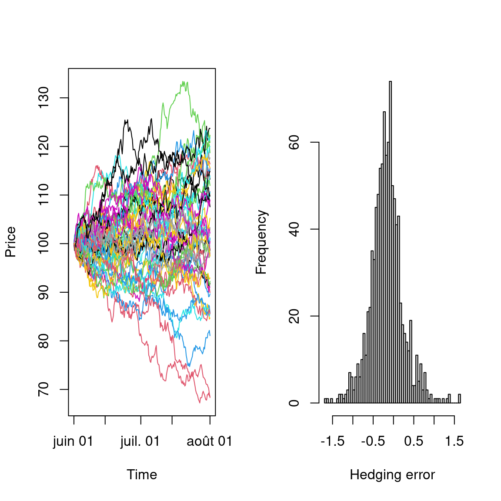
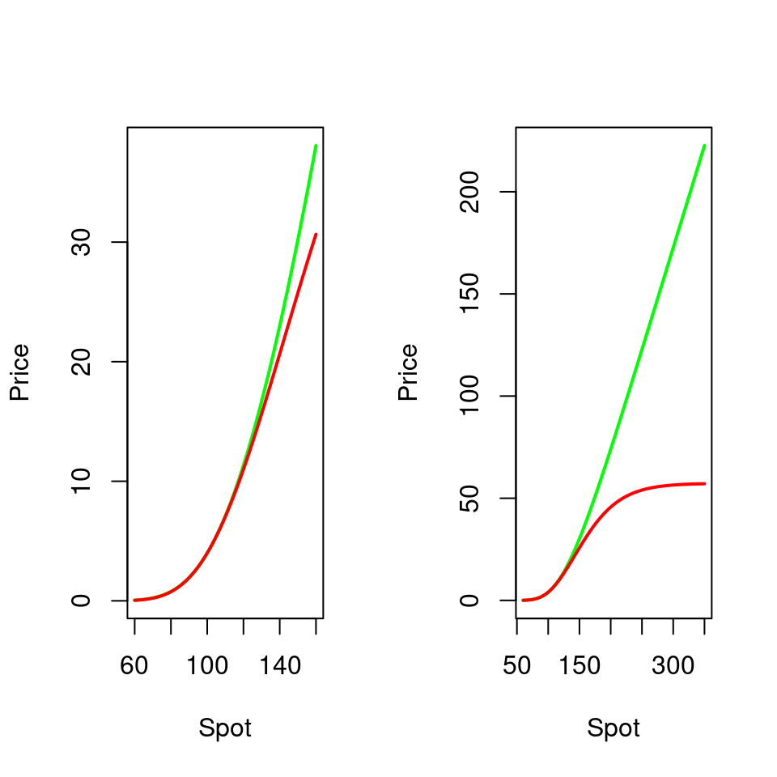
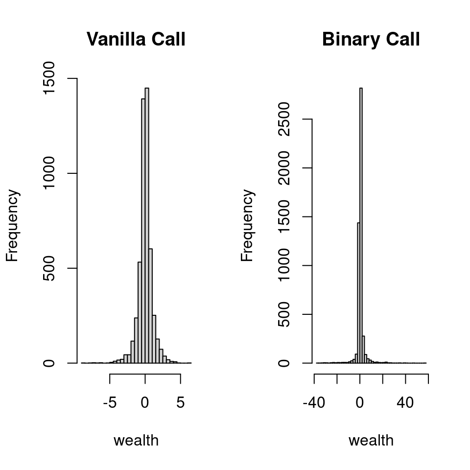
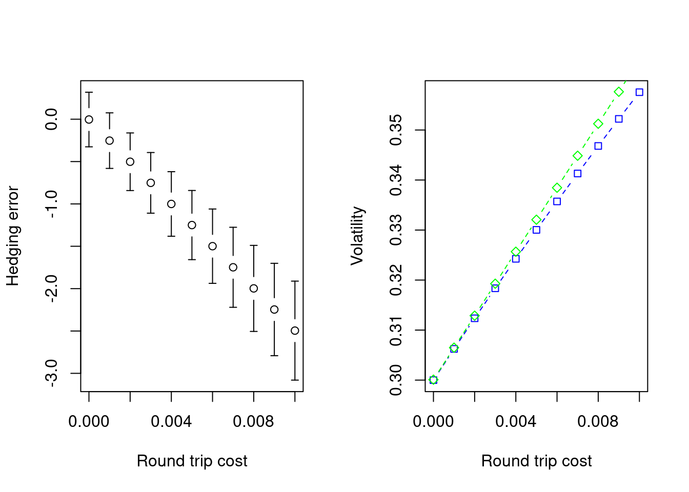
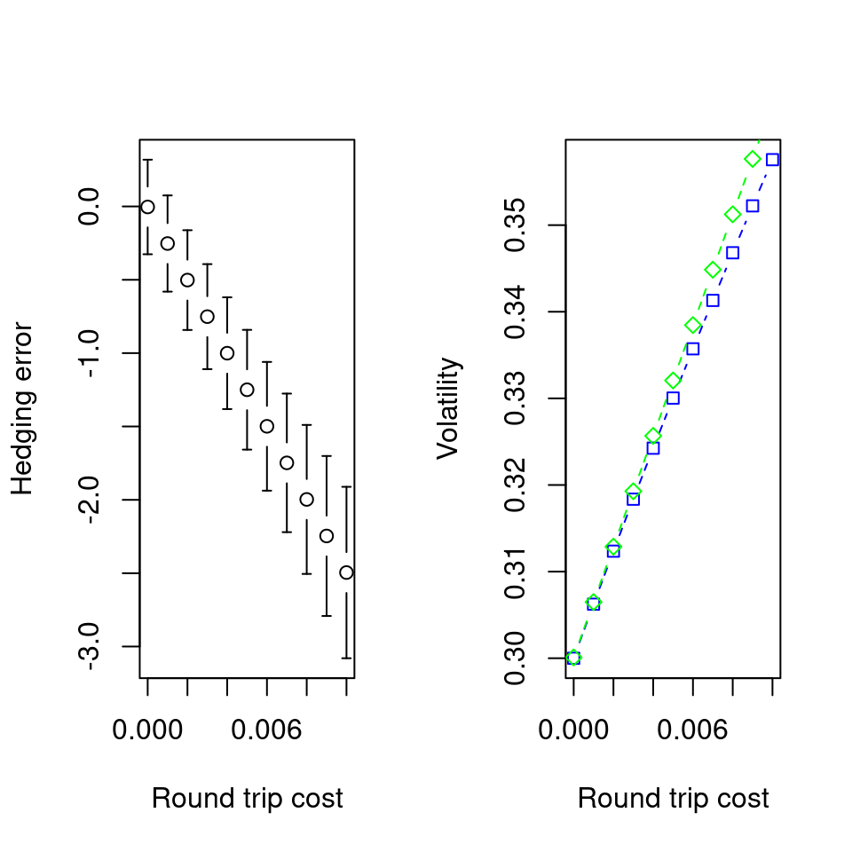

library(fInstrument)## Loading required package: fOptions## Loading required package: timeDate## Loading required package: timeSeries## Loading required package: fBasics## Loading required package: fExoticOptions## Loading required package: fAsianOptions## Loading required package: lubridate## Loading required package: timechange##
## Attaching package: 'lubridate'## The following objects are masked from 'package:base':
##
## date, intersect, setdiff, unionlibrary(DynamicSimulation)## Loading required package: Hmisc## Loading required package: lattice## Loading required package: survival## Loading required package: Formula## Loading required package: ggplot2##
## Attaching package: 'Hmisc'## The following objects are masked from 'package:base':
##
## format.pval, units## Loading required package: xtable##
## Attaching package: 'xtable'## The following objects are masked from 'package:Hmisc':
##
## label, label<-## The following object is masked from 'package:timeSeries':
##
## align## The following object is masked from 'package:timeDate':
##
## align## Loading required package: empfin## Loading required package: fImport## Loading required package: RCurllibrary(empfin)
library(gplots)##
## Attaching package: 'gplots'## The following object is masked from 'package:stats':
##
## lowesslibrary(BB)
library(splines)
library(SuppDists)
library(moments)##
## Attaching package: 'moments'## The following objects are masked from 'package:fBasics':
##
## kurtosis, skewness## The following objects are masked from 'package:timeDate':
##
## kurtosis, skewnessIn this chapter, we investigate the effectiveness of hedging strategies in the Black-Scholes framework, and assess the impact of departures from the assumptions of the Black-Scholes model. Indeed, the ultimate measure of risk is the quality of the dynamic replicating strategy, and the distribution of the residual wealth at expiry of the option. Throughout this chapter, we place ourselves in the situation of a financial institution that sells a derivative and dynamically hedges the risk.
Let \(C(S_t,t)\) be the price of a call option at time \(t, 0 \leq t \leq T\), with the spot price being \(S_t\). We first show that we can construct a trading strategy involving the underlying asset and a bank account, which will replicate exactly the option payoff \(\max(S_T - K, 0)\) at time \(T\) . This strategy is self-financing, meaning that it does not require any cash inflow, nor does it generate any cash outflow after \(t = 0\). Because of this self-financing property, the value of the option must be equal to the initial value of this replicating portfolio. Otherwise, a sure profit could be gained by trading the option against the replicating portfolio. The replicating portfolio \(P\) is made of \(\alpha_t\) shares and a notional amount \(\beta_t\) of risk-free bond. The portfolio value is thus:
\[P_t = \alpha_t S_t + \beta_t B_t \tag{13.1}\]
where \(B_t\) is the price of the risk-free bond at time \(t\):
\[B_t = e^{-r(T-t)}\]
and \(\alpha_t = \frac{\partial C}{\partial S}\). At \(t=0\) the portfolio has by definition the same value as the option:
\[P_0 = C(S_0 , 0)\]
The residual wealth, \(V_t\) is the difference between the replicating portfolio and the option:
\[V_t = P_t - C(S_t, t)\]
We show that in fact \(V_t = 0, \ 0 \leq t \leq T\). Using the definition of the hedge portfolio, we have:
\[\begin{aligned} V_t &=& \frac{\partial C}{\partial S} S_t + \beta_t B_t - C(S_t, t) \\ &=& \Pi_t + \beta_t B_t \beta_t B_t\end{aligned}\]
Differentiate:
\[dV_t = d\Pi_t + \beta_t dB_t\]
From the derivation of the Black-Scholes equation (see Appendix or Hull (1997Hull, John. 1997. Options, Futures and Other Derivatives. Prentice Hall.)), we know that the portfolio \(\Pi_t\) is riskless: \[d\Pi_t = r\Pi dt\]
therefore,
\[\begin{aligned} d V_t &=& r \Pi_t dt + \beta_t r B dt \nonumber \\ &=& r V_t dt \tag{13.2}\end{aligned}\]
Since \(V_0 = 0\), equation (13.2) has a unique solution which is:
\[V_t = 0, \ 0 \leq t \leq T\]
and we conclude, that portfolio \(P\) replicates the option at all time, and in particular at expiry. The dynamic of the replication is governed by the assumptions of the Black-Scholes framework,which are recalled here:
The underlying asset follows a geometric Brownian motion process, with constant and known volatility. The actual drift does not matter.
The interest rate is constant.
Trading is frictionless: there are no trading costs, shares can be purchase in arbitrary fractions, trading can take place continuously.
Clearly, none of these assumptions are verified in real life, and we expect that departure from these assumptions will affect the quality of the dynamic replication described by the Black-Scholes model. The purpose of this chapter is to investigate the effect of departures from these assumptions, and address the question: how useful is the Black-Scholes model in a environment where Black-Scholes assumptions are not verified?
We will adress this question by means of simulations that are now described.
Since trading does not occur continuously, a replicating strategy must consist in a decision rule that is implemented at regular intervals. In the case of the delta-hedging strategy the rule will be:
Define a rebalancing interval \(\Delta t\). Trading dates with therefore be \(\Delta t, 2\Delta t, \ldots, T-\Delta t\).
At each trading date \(t\), buy or sell the underlying stock so that the hedge portfolio holds a quantity of risky asset equal to \(\frac{\partial C_t}{\partial S_t}\).
To describe the process step by step, we use the following notation:
At \(t = 0\), the derivative is sold at price \(C_0\) and the proceeds are used to purchase a hedge portfolio. The initial hedge is \(\alpha_0 S_0 + \beta_0 B_0\), where \(\beta_0\) is computed from the acounting identity: \[C_0 = \alpha_0 S_0 + \beta_0 B_0\]
At trading time \(t\), the decision rule is as follows:
Compute the value of the hedge portfolio formed at the previous time step:
\[V_t = \alpha_{t-\Delta t} S_t + \beta_{t-\Delta t} B_t\]
Compute the amount of risky security to hold:
\[\alpha_t = \frac{\partial C_t}{\partial S_t}\]
Since the strategy must be self-financing, determine the quantity of bond to be lent or borrowed: \[\beta_t = \frac{V_t - \alpha_t S_t}{B_t}\]
At expiry of the derivative, the bond is worth par, and the residual wealth is:
\[-C_T + \alpha_{T-\Delta t} S_T + \beta_{T-\Delta t}\]
The quality of a model is ultimately measured by the residual error: the liquidation value of the replicating portfolio, less the exercise value of the option: \(V_T - C_T\).
Let’s illustrate this rebalancing process through a simple example that will also demonstrate the self-financing nature of the portfolio. A financial institution writes (sells) an at-the-money option on a stock that does not pay any dividend, and worth €100. The option expires in two months, and for illustrative purpose, the hedge will be rebalanced every week (in practice, of course, dynamic rebalancing is done much more often). Interest rate is \(2\%\) and volatility \(30\%\).
r <- 0.02
T <- 2/12
S0 <- 100
K <- 100
sigma <- 0.3
p <- GBSOption(TypeFlag = "c", S = S0, X = K,
Time = T, r = r, b = r, sigma)@price
delta <- GBSGreeks("delta", TypeFlag = "c", S = S0,
X = K, Time = T, r = r, b = r, sigma)The initial hedge portfolio is constructed as follows:
The value of the hedge portfolio is the value of the derivative: \(P_0 = 5.04\).
The delta of the option is: \[\frac{\partial C_0}{\partial S_0} = 0.54\]
Thus the hedge portfolio must also hold \(\alpha_0 = 0.54\) units of stocks, for a cost of \(\alpha_0 \times 100 = 53.52\).
this position is funded by a riskless borrowing of \(\beta_0 B = P_0 - 100 \alpha_0 = -48.48\).
Since the zero-coupon bond is worth \(B_0 = e^{-rT} = 0.997\), we get \(\beta_0 = -48.64\).
At every time step, the portfolio is adjusted acording to the algorithm of the previous section.
This calculation is easily performed with the supplied packages:
dtStart <- myDate("01jun2010")
dtObs <- dtStart
dtExpiry <- myDate("01aug2010")
underlying <- "IBM"
K <- 100
sigma <- 0.3
a <- fInstrumentFactory("vanilla", quantity = 1,
params = list(cp = "c", strike = K, dtExpiry = dtExpiry,
underlying = underlying, discountRef = "USD.LIBOR",
trace = FALSE))
base.env <- DataProvider()
setData(base.env, underlying, "Price", dtObs,
100)
setData(base.env, underlying, "DivYield", dtObs,
0)
setData(base.env, underlying, "ATMVol", dtObs,
sigma)
setData(base.env, underlying, "discountRef", dtObs,
"USD.LIBOR")
setData(base.env, "USD.LIBOR", "Yield", dtObs,
0.02)At this stage, we can price the asset with
p <- getValue(a, "Price", dtStart, base.env)which gives a value of \(p = 4.87\). Next, define the parameters to simulate a dynamic hedging policy with weekly rebalancing and two price paths:
nbSteps <- 8
nbPaths <- 2
dtSim <- seq(dtObs, dtExpiry, length.out = nbSteps +
1)The simulated price path is generated by
tSpot <- pathSimulator(dtSim = dtSim, nbPaths = nbPaths,
innovations.gen = sobolInnovations, path.gen = logNormal,
path.param = list(mu = 0, sigma = sigma),
S0 = 100, antithetic = F, standardization = TRUE,
trace = FALSE)and the simulated paths are placed in a new data provider:
sce.env <- DataProvider(parent = base.env)
setData(sce.env, underlying, "Price", time(tSpot),
as.matrix(tSpot))We can now run the delta-hedge strategy along each path:
assets = list(a)
res <- deltaHedge(assets, sce.env, params = list(dtSim = time(tSpot),
transaction.cost = 0), trace = FALSE)The result is a data structure that containts the residual wealth (hedging error) per scenario.
Tables ?? and ?? illustrate how the hedge portfolios evolve over time, based on the path of the underlying asset. In Table ??, the option expires out of the money, and the hedge portfolio ends up being exclusively cash. In Table ??, the option expires in the money, and the hedge portfolio holds at expiry one unit of stock. Note the amount of leverage required by delta hedging when the option expires in the money: the option payoff is 45 cents, and this is replicated by a portfolio holding €100.45 worth of stock, funded by borrowing €99.00.
The data shown in both tables are extracted from the simulation results and formated with the following function.
% latex table generated in R 4.2.2 by xtable 1.8-4 package % Sun Jan 15 22:57:07 2023 % latex table generated in R 4.2.2 by xtable 1.8-4 package % Sun Jan 15 22:57:07 2023More time steps and scenarios are needed in order to accurately assess the distribution of residual wealth. The next experiment uses the parameters of the previous section, with 200 time steps and 1000 sceanrios.
Figure ?? displays a few simulated paths for the underlying asset, and an histogram of the residual wealth.
nbSteps <- 200
nbPaths <- 1000
dtSim <- seq(dtObs, dtExpiry, length.out = nbSteps +
1)
tSpot <- pathSimulator(dtSim = dtSim, nbPaths = nbPaths,
innovations.gen = sobolInnovations, path.gen = logNormal,
path.param = list(mu = 0, sigma = sigma),
S0 = 100, antithetic = F, standardization = TRUE,
trace = FALSE)
sim.env <- DataProvider(parent = base.env)
setData(sim.env, underlying, "Price", time(tSpot),
as.matrix(tSpot))
sim.deltaHedge <- deltaHedge(assets, sim.env,
params = list(dtSim = time(tSpot), transaction.cost = 0),
trace = FALSE)
As expected, the distribution of residual wealth is centered, and has a standard deviation of
sd.wealth <- sd(t(tail(sim.deltaHedge$wealth,
1)))A confidence interval (say, 80%) for the P&L of the delta-hedging strategy is readily computed:
pl.confidence <- qnorm(0.2, mean = 0, sd = sd.wealth)which gives a value of \(-0.34\). In other words, there is a 80% probability that this delta-hedging strategy will yield a P&L greater than \(-0.34\) per € of nominal. In the next couple of sections, we will provide a more rigorous analysis of these observations.
With this simulation tool, we will now consider the effect on hedging effectiveness of:
We first consider the risk related to discreet hedging. The dynamic of the replicating portfolio, \(V_t\) rebalanced at times \(t_i, i= 1, \ldots, N\). For \(t \in [t_i, t_{i+1})\) is:
\[dV_t = \frac{\partial C(t_i, S_{t_i})}{\partial S} dS_t \tag{13.3}\]
The dynamic of the option price is:
\[dC_t = \frac{\partial C(t, S_{t})}{\partial S} dS_t\]
The difference between the two processes being that in the hedge portfolio, the quantity of stock \(\sfrac{\partial C(t_i, S_{t_i})}{\partial S_{t_i}}\) (Eq. \[eq:dV\]), is held constant between two rebalancing dates.
The hedging error process \(\epsilon_t = C_t - V_t\) is therefore:
\[d\epsilon_t = \left(\frac{\partial C(t, S_{t})}{\partial S} - \frac{\partial C(t_i, S_{t_i})}{\partial S} \right) dS_t\]
It can be shown that:
\[\varinjlim_{h \rightarrow 0} E^Q \left[ \frac{\epsilon_T^2}{\Delta t} \right] = E^Q \left[ \frac{1}{2} \int_0^T \left( \frac{\partial^2 C(S_t,t)}{\partial S_t^2} \right)^2 S^4_t \sigma^4 dt\right]\]
It can also be shown that the process \(\epsilon_t\) converges in distribution to a process that has the following expression:
\[\frac{\epsilon_t}{\sqrt{\Delta t}} \rightarrow \frac{1}{\sqrt{2}} \int_0^t \frac{\partial^2 C(S_u, u)}{\partial S^2} \sigma^2 S^2_u dZ_u\]
This expression highlights the following points:
To test the impact of hedging frequency on the distribution of delta-hedging error, we simulate the dynamic delta hedging of a ATM option. The price paths are generated with the same volatility as the one used for pricing, and there are no transaction costs. Therefore, the only source of hedging error is the discrete hedging policy. The simulation involves several steps that are outlined next.
First, define the derivative to be dynamically hedged:
dtExpiry <- mytDate("01jan2011")
underlying <- "IBM"
K <- 100
a <- fInstrumentFactory("vanilla", quantity = 1,
params = list(cp = "c", strike = K, dtExpiry = dtExpiry,
underlying = underlying, discountRef = "USD.LIBOR",
trace = FALSE))Next, we define the market data that we be used in the simulation. The base environment holds data that will not change from one simulation to the next.
dtStart <- mytDate("01jan2010")
nbPaths <- 1000
sigma <- 0.3
base.env <- DataProvider()
setData(base.env, underlying, "Price", dtStart,
100)
setData(base.env, underlying, "DivYield", dtStart,
0.02)
setData(base.env, underlying, "ATMVol", dtStart,
sigma)
setData(base.env, underlying, "discountRef", dtStart,
"USD.LIBOR")
setData(base.env, "USD.LIBOR", "Yield", dtStart,
0.02)We next perform a series of dynamic hedging simulations, while varying the number of time steps.
nb.range <- seq(10, 500, by = 50)
mean.error <- 0 * nb.range
sd.error <- 0 * nb.range
for (i in seq_along(nb.range)) {
nbSteps <- nb.range[i]
dtSim <- seq(as.timeDate(dtStart), as.timeDate(dtExpiry),
length.out = nbSteps + 1)
# price paths
tSpot <- pathSimulator(dtSim = dtSim, nbPaths = nbPaths,
innovations.gen = sobolInnovations, path.gen = logNormal,
path.param = list(mu = 0, sigma = sigma),
S0 = 100, antithetic = F, standardization = TRUE,
trace = FALSE)
# derived environment for scenario
# analysis
sce.env <- DataProvider(parent = base.env)
setData(sce.env, underlying, "Price", time(tSpot),
as.matrix(tSpot))
# simulate a delta-hedge strategy along
# each path
assets = list(a)
res <- deltaHedge(assets, sce.env, params = list(dtSim = time(tSpot),
transaction.cost = 0), trace = FALSE)
expiry.error <- tail(res$wealth, 1)
mean.error[i] <- mean(expiry.error)
sd.error[i] <- sd(as.vector(expiry.error))
}Figure ?? illustrates the mean and standard deviation of the hedging error as a function of the number of rehedging dates. The figure also shows the curve \[y = a + b \frac{1}{\sqrt{N}}\]
fitted to the standard deviation of the hedging error. The theory predicts that the standard deviation of the hedging error is proportional to \(\frac{1}{\sqrt{N}}\), where \(N\) is the number of re-hedging dates.
plotCI(x = nb.range, y = mean.error, uiw = sd.error/2,
liw = sd.error/2, ylim = c(min(mean.error -
sd.error/2), max(mean.error + sd.error/2)),
xlab = "Nb of rebalancings", ylab = "Hedging error")
q <- lm((mean.error + sd.error/2) ~ sqrt(1/nb.range))
yy <- predict(interpSpline(nb.range, q$fitted.values))
# lines(nb.range, q$fitted.values, lwd=2,
# col='red')
lines(yy, lwd = 2, col = "red")To investigate the effect of gamma on hedging error, we will compare the effectiveness of delta hedging, applied to two options that initially have the same price and delta. The initial Gammas are within 10% of each other. However, the options differ substantially in one aspect: the first option is a European call, and its Gamma varishes when the option gets deep in the money, while the second option is a binary call, whose Gamma remains large and actually changes sign under the same conditions.
To perform the experiment, we first define the data environment: the spot price is 100, option maturity will be 1 year.
dtExpiry <- myDate("01jan2011")
dtStart <- myDate("01jan2010")
underlying <- "IBM"
sigma <- 0.3
base.env <- DataProvider()
setData(base.env, underlying, "Price", dtStart,
100)
setData(base.env, underlying, "DivYield", dtStart,
0.02)
setData(base.env, underlying, "ATMVol", dtStart,
sigma)
setData(base.env, underlying, "discountRef", dtStart,
"USD.LIBOR")
setData(base.env, "USD.LIBOR", "Yield", dtStart,
0.02)The strike of the European option is set to \(K=130\).
K <- 130
op.eu <- fInstrumentFactory("vanilla", quantity = 1,
params = list(cp = "c", strike = K, dtExpiry = dtExpiry,
underlying = underlying, discountRef = "USD.LIBOR",
trace = FALSE))
P <- getValue(op.eu, "Price", dtStart, base.env)
D <- getValue(op.eu, "Delta", dtStart, base.env)The price is \(P=3.99\), delta is \(D=0.26\).
The strike and payoff of the binary option are set in order to match the price and delta of the European call, so as to make a meaningful comparison of hedging error. This involves solving a set of two non-linear equations (price and delta) in two unknown (payoff and strike). These equations are solved by means of the following function:
price.delta.error <- function(x, base.env) {
Q <- x[1]
K.b <- x[2]
op.bi <- fInstrumentFactory("binary", quantity = Q,
params = list(cp = "c", strike = K.b,
dtExpiry = dtExpiry, underlying = underlying,
discountRef = "USD.LIBOR", trace = FALSE))
Pa <- getValue(op.bi, "Price", dtStart, base.env)
Da <- getValue(op.bi, "Delta", dtStart, base.env)
f <- rep(NA, 2)
f[1] <- (P - Pa)
f[2] <- (D - Da)
f
}
ans <- dfsane(par = c(100, 100), fn = price.delta.error,
base.env = base.env)## Iteration: 0 ||F(x0)||: 31.38328
## iteration: 10 ||F(xn)|| = 0.01664841
## iteration: 20 ||F(xn)|| = 0.1147432
## iteration: 30 ||F(xn)|| = 0.04243755
## iteration: 40 ||F(xn)|| = 0.009005428
## iteration: 50 ||F(xn)|| = 0.001379282
## iteration: 60 ||F(xn)|| = 6.250002e-06Q <- ans$par[1]
K.b <- ans$par[2]The solution is a binary call with payoff \(Q=58.45\) and strike \(K=155.06\).
op.bi <- fInstrumentFactory("binary", quantity = Q,
params = list(cp = "c", strike = K.b, dtExpiry = dtExpiry,
underlying = underlying, discountRef = "USD.LIBOR",
trace = FALSE))
G.bi <- getValue(op.bi, "Gamma", dtStart, base.env)
G.eu <- getValue(op.eu, "Gamma", dtStart, base.env)The Gammas of the two options are not identical, but within 10% of each others: \(0.0107\) for European option, \(0.01\) for the binary option.
To illustrate the similarity between the two derivatives, we plot in Figure?? the prices of both options for a range of underlying values, with a zoom around the current spot price.
sce.1 <- t(as.matrix(seq(60, 160, length.out = 50)))
sce.2 <- t(as.matrix(seq(60, 350, length.out = 50)))
# derived data provider with price scenarii
sim.env.1 <- DataProvider(parent = base.env)
setData(sim.env.1, underlying, "Price", dtStart,
sce.1)
sim.env.2 <- DataProvider(parent = base.env)
setData(sim.env.2, underlying, "Price", dtStart,
sce.2)
# Compute and plot NPV per scenario for
# underlying spot price
p.eu.1 <- getValue(op.eu, "Price", dtStart, sim.env.1)
p.bi.1 <- getValue(op.bi, "Price", dtStart, sim.env.1)
p.eu.2 <- getValue(op.eu, "Price", dtStart, sim.env.2)
p.bi.2 <- getValue(op.bi, "Price", dtStart, sim.env.2)
A delta hedging strategy is next simulated for both derivatives, using 100 steps, 5000 paths.
nbSteps <- 100
nbPaths <- 5000
dtSim <- seq(as.timeDate(dtStart), as.timeDate(dtExpiry),
length.out = nbSteps + 1)# price paths
tSpot <- pathSimulator(dtSim = dtSim, nbPaths = nbPaths,
innovations.gen = sobolInnovations, path.gen = logNormal,
path.param = list(mu = 0, sigma = sigma),
S0 = 100, antithetic = F, standardization = TRUE,
trace = FALSE)
# derived environment for scenario analysis
sce.env <- DataProvider(parent = base.env)
setData(sce.env, underlying, "Price", time(tSpot),
as.matrix(tSpot))
assets = list(op.eu)
res1 <- deltaHedge(assets, sce.env, params = list(dtSim = time(tSpot),
transaction.cost = 0), trace = FALSE)
assets = list(op.bi)
res2 <- deltaHedge(assets, sce.env, params = list(dtSim = time(tSpot),
transaction.cost = 0), trace = FALSE)Figure ?? displays the histograms of residual errors.

Statistics on the hedging error at expiry are summarized in Table \[tab:euro-bin\]. The standard deviation of the binary hedging error is about three times larger than for the vanilla option. Most importantly, the excess kurtosis is almost 10 times larger, indicating the possibilily that applying a standard delta-hedging strategy to a binary option can result in extreme losses (or gains!). All of this in a context where the only departure from the Black-Scholes assumptions is a discrete rather than continuous hedging. We next investigate the impact of transaction costs.
w1 <- as.vector(tail(res1$wealth, 1))
w2 <- as.vector(tail(res2$wealth, 2))
df.tmp <- data.frame(Vanilla = w1, Binary = w2)
funs <- list(mean, stdev, kurtosis, skewness)
res <- sapply(funs, mapply, df.tmp)
colnames(res) <- c("mean", "$\\sigma$", "skewness",
"kurtosis")
xm <- xtable(res)Let \(S_t\) be the mid price of the underlying asset and \(k\) the proportional transaction cost: the hedger buys at the ask price: \[S_t^a = S_t (1+\frac{k}{2})\]
and sells at the bid: \[S_t^a = S_t (1-\frac{k}{2})\]
Clearly, transaction costs increase the cost of replication. To compensate for that, one needs to start with a higher budget, that is, the option seller should change a higher option premium than the one given by the Black-Scholes model. This higher option premium can be obtained in the Black-Scholes framework by increasing volatility. Leland (1985Leland, H E. 1985. “Option Pricing and Replication with Transactions Costs.” The Journal of Finance 40 (5): 1283–1301.) shows that one can adjust the Black-Scholes volatility as follows:
\[\sigma^{+2} = \sigma^2 \left( 1+\sqrt{\frac{2}{\pi}} \frac{k}{\sigma \sqrt{\Delta t}}\right)\]
where \(\sigma\) is the Black-Scholes volatility, and \(\sigma+\) the volatility adjusted for transaction costs.
To test Leland’s formula, we simulate the delta-hedging of a at-the-money European option, struck at 100, for transaction costs \(k\) ranging from \(0\) to \(1\%\). The simulation is performed as follows:
tr.range <- seq(0, 1, 0.1)/100
nbSteps <- 250
dtSim <- seq(as.timeDate(dtStart), as.timeDate(dtExpiry),
length.out = nbSteps + 1)
dt <- as.double(dtExpiry - dtStart)/(365 * nbSteps)
# price paths
tSpot <- pathSimulator(dtSim = dtSim, nbPaths = nbPaths,
innovations.gen = sobolInnovations, path.gen = logNormal,
path.param = list(mu = 0, sigma = sigma),
S0 = 100, antithetic = FALSE, standardization = TRUE,
trace = FALSE)
# derived environment for scenario analysis
sce.env <- DataProvider(parent = base.env)
setData(sce.env, underlying, "Price", time(tSpot),
as.matrix(tSpot))
mean.error <- 0 * tr.range
sd.error <- 0 * tr.range
for (i in seq_along(tr.range)) {
# simulate a delta-hedge strategy along
# each path
assets = list(a)
res <- deltaHedge(assets, sce.env, params = list(dtSim = time(tSpot),
transaction.cost = tr.range[i]/2), trace = FALSE)
expiry.error <- tail(res$wealth, 1)
mean.error[i] <- mean(expiry.error)
sd.error[i] <- sd(as.vector(expiry.error))
}We next compare the expected hedging error to the value predicted by Leland’s formula. To do so, we convert the expected hedging error into a volatility adjustment, using the first order approximation:
\[P(\sigma) = P(\sigma^*) + (\sigma-\sigma^*) \frac{\partial P}{\partial \sigma}\]
where \(P(\sigma)\) is the price of the option with volatility \(\sigma\).
sigma.leland <- sigma * sqrt(1 + sqrt(2/pi) *
(tr.range/(sigma * sqrt(dt))))
vega <- getValue(a, "Vega", dtStart, base.env)
sigma.sim <- sigma - mean.error/vegaThe results are presented in Figure ??. We find very good agreement between the empirical result and Leland’s formula.


The strongest assumption of the Black-Scholes model is arguably the assumption that volatility is known and constant. we next investigate the impact of unknown volatility of hedging error, following a landmark paper by (Karoui1998?).
To simplify the notation, assume now that hedging is done continuously, but that the volatility of the underlying asset is unknown. The dynamic of the underlying asset is:
\[dS_t = \mu dt + \sigma_t dW_t\]
The derivative is priced with an estimated volatility \(\Sigma\).
The dynamic of the hedge portfolio is:
\[dV_t = \frac{\partial C_t^\Sigma}{\partial S_t} dS_t\]
By Itô’s lemma:
\[dC(S_t, t) = \left( \frac{\partial C}{\partial t} + \frac{1}{2} \frac{\partial^2 C}{\partial S^2} \sigma_t^2 S_t^2 \right) dt + \frac{\partial C}{\partial S} dS_t\]
The price of the derivative verifies the Black-Scholes EDP:
\[\frac{\partial C}{\partial t} + \frac{1}{2} \Sigma^2 S_t^2 \frac{\partial^2 C}{\partial S^2} = 0\]
this yields,
\[d \epsilon_t = dV_t - dC_t = \frac{1}{2} \left[ \Sigma^2 - \sigma_t^2 \right] \frac{\partial^2 C}{\partial S^2} S^2 dt\]
and the hedging error at expiry is thus,
\[\epsilon_T = \frac{1}{2} \int_0^T \left[ \Sigma^2 - \sigma_t^2 \right] \frac{\partial^2 C}{\partial S^2} S^2 dt\]
We identify three components in the above equation:
the nature of the option, characterized by its Gamma.
the behavior of the market, characterized by \(\sigma_t\),
the model calibration, summarized here by the Black-Scholes volatility \(\Sigma\)
If the Gamma keeps a constant sign, we can compute the fair value of the Black-Scholes volatility that sets the expected hedging error to 0 is
\[\sigma_{BS}^2 = \frac{E\int_0^T \Gamma S^2 \frac{\Delta S}{S}^2}{E\int_0^T \Gamma_{BS} S^2 dt}\]
Equation (\[eq:ElKaroui-JB-S\]) also shows that, when the gamma keeps a constant sign, we can choose a pricing volatility \(\Sigma\) such that \(E(\epsilon_T)\) is positive.
The experiments of this chapter highlight the crucial role of Gamma in dynamic hedging. In short, the original Black-Scholes framework remains adapted for options for which the Gamma does not change sign. This is summarized in Table \[tab:bs-adapted\]. In such case, a positive expected hedging error can be ensured by setting the pricing volatility sufficiently high or low, as the case may be. Moreover, the Gamma of these options often vanishes in deep in the money or out of the money scenarios, and this renders of course the delta hedging strategy very effective. This may explain why the Black-Scholes model remains so widely used, despite its well documented shortcomings. Next chapter describes a framework for dealing with Gamma risk, while remainning in the Black-Scholes framework.
| Payoff | Is BS Adapted? |
|---|---|
| Vanilla | Yes |
| European Binary | No |
| Up and Out Barrier | No |
| Asian | Yes |
In the previous section, we have determined that hedging error is determined by three factors: the hedging frequency, the magnitude of the option gamma, and finally the difference between \(\Sigma\) (the BS volatility used for pricing and hedging) and the volatility that is actually experienced, \(\sigma_t\).
In this section, we investigate strategies for controlling the risk associated with the magnitude of the gamma.